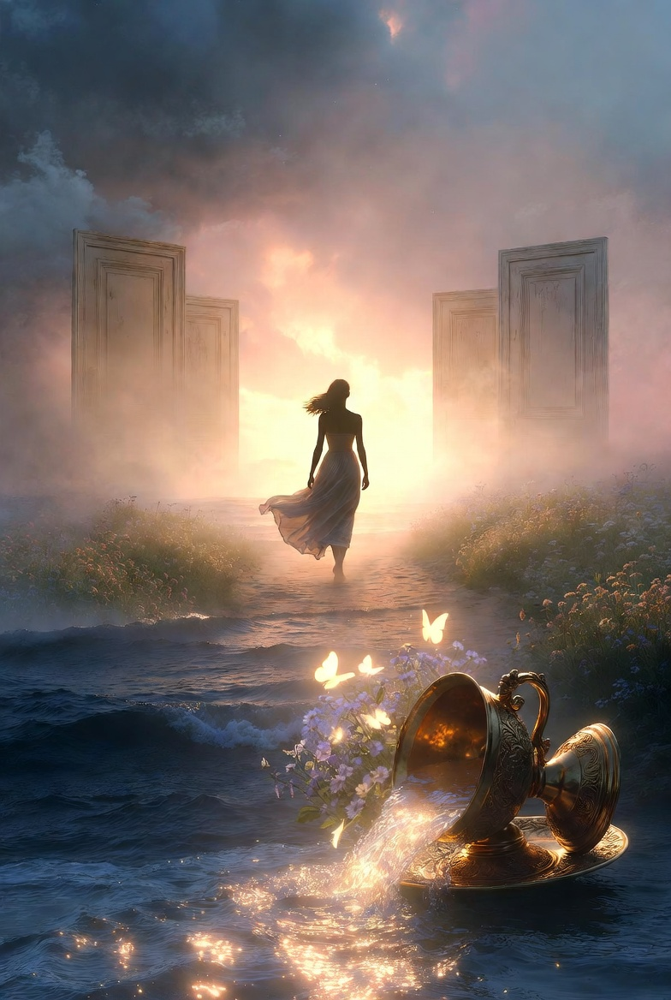

Unspoken: Poems of Love and Memory

A Farewell to Nostalgia
About this poem
This poem captures the emotional journey of letting go of past heartaches and betrayals.
Through reflection and gratitude, the speaker finds the strength to release what no longer
serves her and embrace new beginnings with confidence and peace

These days I cling too tightly to the past,
trying to make peace with wounds that never healed.
When I look back, all I see is betrayal and longing,
every love I held dear never quite found its footing.
My emotions rise like a tide,
stirred by memories of old heartaches,
like a cup overturned,
spilling everything it once contained.
I thank the Divine for the unshakable distance,
for sealing the doors that were never meant to reopen,
for guarding the space between who I was
and the pain I no longer need to carry.
The ghosts of my past may linger for a while,
but I am the master of my life.
I choose to release what once bound me,
to walk forward with an open heart,
welcoming new faces, new beginnings,
and the beauty waiting in the present.
I believe I carry the strength and confidence
to choose peace over nostalgia,
reality over the ache of what could have been.
Arshia Sultana
 ← Home
← Home